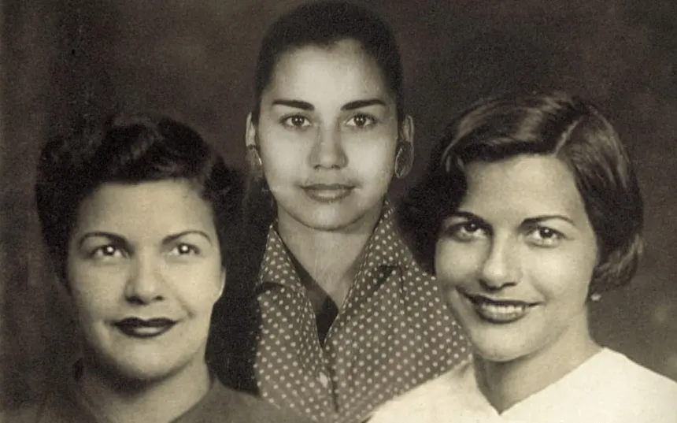

Il 25 novembre è la Giornata internazionale per l'eliminazione della violenza contro le donne, istituita dalle Nazioni Unite nel 1999. È una ricorrenza dedicata a sensibilizzare l’opinione pubblica, sostenere le vittime e promuovere politiche e azioni concrete contro tutte le forme di violenza di genere.
La giornata nasce dall’urgenza di riconoscere che la violenza contro le donne non è un insieme di episodi isolati, ma un fenomeno strutturale che attraversa culture, età, Paesi e contesti sociali. Per questo il 25 novembre è oggi un momento di riflessione collettiva, mobilitazione e consapevolezza.
La scelta della data ricorda l'assassinio delle sorelle Mirabal, tre donne dominicane impegnate nella resistenza contro la dittatura di Rafael Trujillo. La loro storia è diventata un simbolo mondiale della lotta contro l’oppressione, il coraggio femminile e la difesa dei diritti umani.
Oggi il 25 novembre rappresenta un punto di riferimento globale: scuole, associazioni, comuni, centri antiviolenza e istituzioni organizzano incontri, mostre, convegni e momenti di confronto per dare voce a chi non può più parlare e per costruire una società più giusta e sicura.
La giornata non è solo memoria, ma anche un invito ad agire: riconoscere i segnali di violenza, sostenere chi ha bisogno di aiuto, promuovere una cultura del rispetto e dell’uguaglianza. Ogni persona può essere parte del cambiamento.